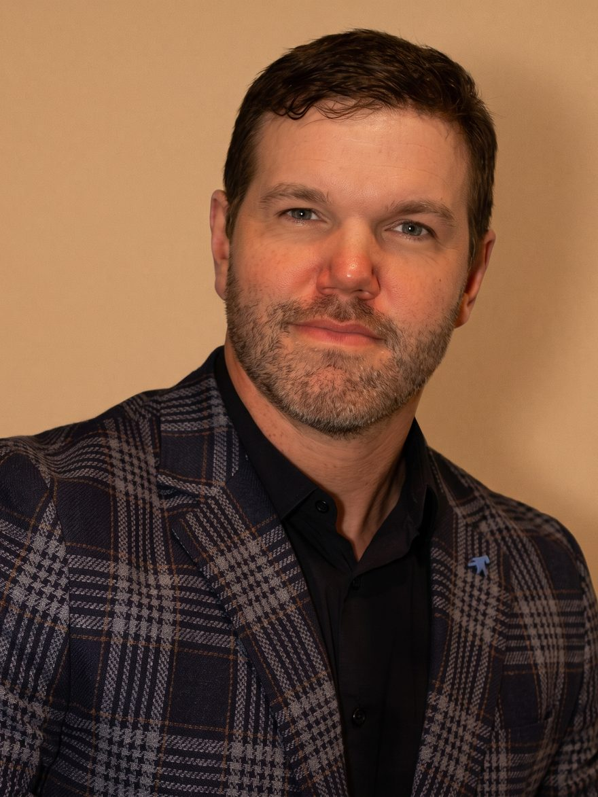

Mobile Dental Anesthesiology — Texas Triangle
Office-Based General Anesthesia, Brought to Your Practice.
Dr. Brett Harris is a dental anesthesiologist who comes to your office, so you can treat patients under general anesthesia without an anesthesiologist on staff — for pediatric dentistry, oral surgery, periodontics, full-arch implants, and general and cosmetic dentistry. One flat fee per case.

Brett Harris, DMD — Founder, Harris Anesthesia Group
About the Practice
Dr. Brett Harris, DMD
Dr. Brett Harris completed a three-year, hospital-based residency in Advanced Education in Dental Anesthesiology at NYU Langone Hospitals before founding Harris Anesthesia Group to bring hospital-level anesthesia care into the dental office. Office-based anesthesia is all he does: Dr. Harris serves exclusively as the anesthesia provider, working alongside oral surgeons, periodontists, prosthodontists, general dentists, and pediatric dentists to keep patients safe, still, and comfortable.
This model lets the treating dentist stay fully focused on the work while an independent, dedicated anesthesia provider manages airway, sedation depth, hemodynamics, and recovery — the same division of labor patients would expect in a hospital operating room, brought directly into your office.
- Doctor of Dental Medicine (DMD) — University of Nevada, Las Vegas School of Dental Medicine
- Advanced Education in Dental Anesthesiology — NYU Langone Hospitals (2017–2020)
- B.S., Management — Brigham Young University
- Focused exclusively on office-based dental anesthesia
Services
General Anesthesia for Every Kind of Dental Practice
With the airway secured under general anesthesia, there’s no patient movement and no airway to manage while you work — whatever the procedure. Dr. Harris supports:
Pediatric Dentistry
Children who need general anesthesia to complete treatment safely, in your own office instead of a hospital operating room.
Oral & Maxillofacial Surgery
Extractions, third molars, grafting, and the other surgical cases your practice lines up for general anesthesia.
Periodontics
Periodontal and implant surgery performed with a secured airway, start to finish.
Full-Arch & Advanced Implants
All-on-X, zygomatic and pterygoid implants, full-arch placement with sinus lifts, full-mouth extractions with immediate implants, alveoloplasty, and bone block grafting.
General & Cosmetic Dentistry
Extensive restorative and cosmetic treatment, and anxious patients who are best treated in a single visit under anesthesia.
Don’t See Your Case Listed?
If the procedure can be done in a dental office, it can likely be done under general anesthesia. Reach out to discuss your case.
Ask About Your CaseWhy a Dental Anesthesiologist
Not Every Anesthesia Provider Is Built for a Dental Office
Medical anesthesiology groups and national scheduling agencies are moving into dentistry. Here’s what’s different when your anesthesia provider is a dentist.
Accountable to the Same Dental Board
Dr. Harris is a dentist, regulated by the same dental board you are. With a medical anesthesiology group, you and your anesthesia provider answer to different boards — so when it matters, you’re not in it together.
Stays Until Discharge
Hospital anesthesiologists are used to handing patients off to recovery nurses. Dr. Harris stays with your patient until discharge criteria are met.
Knows How a Dental Office Runs
Trained as a dentist, he understands your operatory, your team, and where the real risks in office-based anesthesia are.
Dedicated Full-Time, Not a Side Gig
Mobile dental anesthesia is the whole of Dr. Harris’s practice, with the equipment to match on every case.
For Texas Dental Practices
Offer General Anesthesia in Your Office—No Anesthesiologist on Staff
If your practice has patients who need general anesthesia but no anesthesia coverage in-house, you’re likely turning those cases away or sending them to a hospital. Dr. Harris comes to your office with everything needed, so your practice can keep them.
No In-House Anesthesia Team Needed
Dr. Harris and his equipment cover it entirely — nothing for your practice to hire, credential, or maintain.
Mobile, In-Office Service
We travel to your operatory anywhere in the Texas Triangle — Austin, San Antonio, Houston, and Dallas.
Flat, Predictable Per-Case Fee
One flat fee billed directly to your practice per case — no separate patient billing to manage.
Already Have an Anesthesia Provider?
Many practices work with more than one. Keep Dr. Harris on call for the cases that need general anesthesia and for the days your usual provider is booked — including if you handle your own sedation today.
We coordinate scheduling around your existing calendar and provide complete anesthesia documentation for your patient charts on every case.
Partner With UsWhat Dentists Say
Trusted by Texas Surgeons and Dentists
“Brett is the best anesthesiologist I have worked with, and as an oral and maxillofacial surgeon I know quality when I see it.”
“Dr. Harris is a pleasure to work with and we absolutely trust him to take care of our patients under anesthesia. From pediatric to medically compromised elderly patients, and everyone in between, Dr. Harris is our go-to for in-office anesthesia for procedures ranging from general and cosmetic dentistry to the full scope of oral and maxillofacial surgery!”
“I’ve worked with multiple anesthesiologists over my 25 year career. Dr. Harris is hands down the best to work with. He is excellent technically, great with patients and staff — if I can’t work with him, the case gets delayed.”
Safety & Monitoring
A Dedicated Anesthesia Provider for Every Case
General anesthesia places real demands on airway management, cardiovascular stability, and sedation depth. Harris Anesthesia Group takes that responsibility off your team, providing continuous, dedicated monitoring from the first dose to full recovery.
Continuous Monitoring
Blood pressure, pulse oximetry, capnography, and cardiac monitoring maintained throughout every procedure.
Airway-First Approach
Sedation and positioning planned around a secured airway for the full length of the case.
Emergency Preparedness
Full emergency drug kit, advanced airway equipment, and resuscitation protocols on-site for every appointment.
Seamless Recovery
Dr. Harris monitors every patient through emergence and recovery, and stays until discharge criteria are met.
Get in Touch
Schedule a Consultation
If your practice is interested in a partnership, or you have questions about anesthesia for an upcoming procedure, we’d like to hear from you.
- Phone
- (650) 705-9152
- Service Area
- The Texas Triangle — Austin, San Antonio, Houston & Dallas